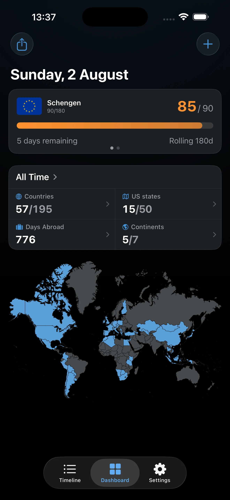
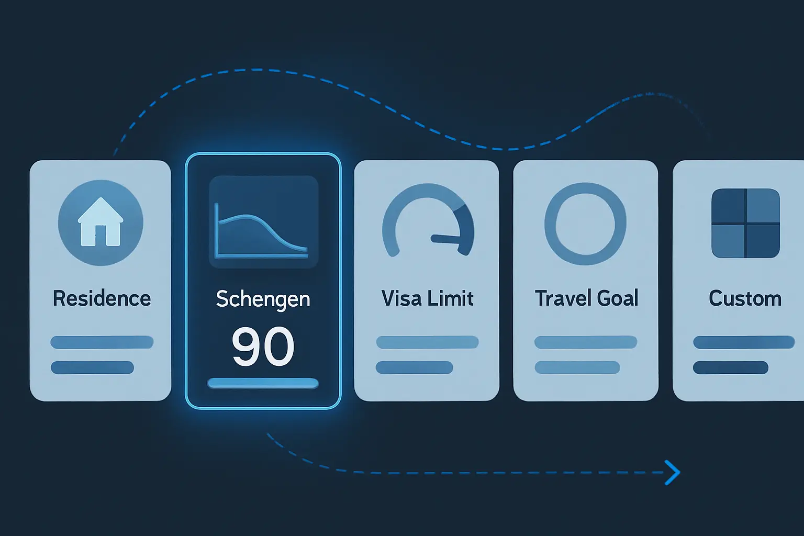
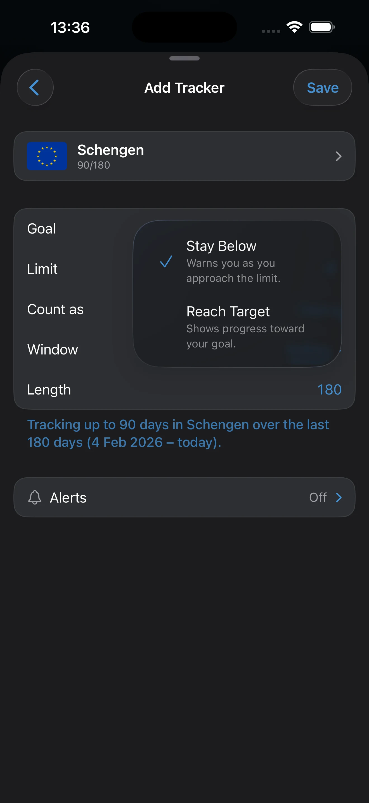
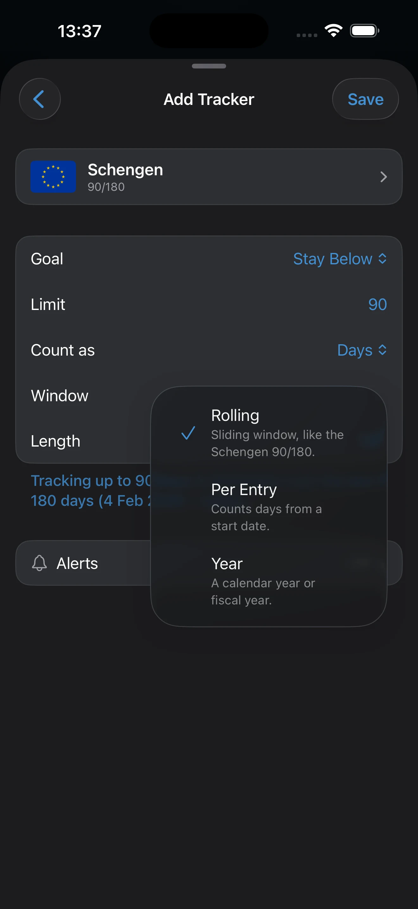

Trackers and Limits
Troubleshoot a tracker that looks wrong, keep the setup aligned with your rule, and verify when the result is safe to trust.
What This Page Helps You Do
Use this page when a tracker looks wrong, when you are not sure the setup matches the rule you care about, or when you want to know whether the result is safe enough to act on.
By the end of this page, you should know:
- why a tracker can look wrong even when the trip record seems close
- which setup choices change the count and which do not
- what to verify before you trust the result or expect Smart Alerts
A tracker is a counting rule, not the record itself. AtlasDays derives it from your trip record, so incomplete, approximate, or unresolved trips will flow straight into the result.
When a Tracker Looks Wrong
Most tracker mismatches come from a small number of setup or trip-record issues. Check these before you change anything else:
- Country scope: confirm the tracker is pointed at the right country or preset set. A one-country tracker and a Schengen tracker can legitimately show different numbers for the same trip record.
- Window: confirm whether the question is Rolling, Per Stay, or Yearly. Those windows answer different questions.
- Mode: confirm whether the tracker should be Stay under or Reach target. The same exact days can look very different depending on whether AtlasDays is showing remaining days or progress toward a goal.
- Days vs nights: confirm whether the tracker is counting days or nights. From Dashboard, long-press the tracker card and choose Count Nights or Count Days for that tracker.
- ongoing trip: if a relevant trip is still open, AtlasDays uses today as the effective end date, so the number keeps moving until you close the trip.
- Trip precision: only trips saved as Exact Dates feed exact tracker math. Year and Unknown preserve history but do not add precise days.
- Transit: trips marked Transit count as 0 days. If you actually entered the country, fix the trip instead of the tracker.
- Tracking from: for a Per Stay tracker, the Tracking from date must match the stay you are measuring.
- Yearly period: for a Yearly tracker, confirm the stored year or fiscal-year-style period before trusting the total.
- Smart Alerts: if the count looks right but no alert fired, check AtlasDays Pro, notification permission, and whether the tracker plus relevant trips are fully set up. Smart Alerts are not a substitute for reviewing the tracker.
When to Add a Tracker
Add a tracker when you already know the question you want AtlasDays to answer, such as “How many Schengen days have I used?”, “How many days have I spent in this country this year?”, or “How long has this stay been since it started?”
- Add the tracker from Dashboard. If you do not have any trackers yet, Dashboard shows an Add Tracker entry point.
- Add the tracker early if you want the structure in place, but do not rely on it until the relevant trips are exact and cleaned up.
- If you are still rebuilding history, fix the trip record first in Trip Modes and Record Quality.

What Trackers Do in AtlasDays
Each tracker applies one counting rule to a selected country set. The same trip can affect multiple trackers at once, because each tracker can use a different country scope, threshold, direction, and time window.
You can track:
- one country
- a preset set such as Schengen
- a continent or region
- any custom multi-country set you select yourself
Choose the Right Tracker Preset

Residence
Use Residence when you want to accumulate time in one country across a year-style period. It starts as a Reach target yearly tracker with a default threshold of 183 days, and you can still change the threshold, year, or fiscal-year-style period later.
Schengen 90/180
Use Schengen 90/180 when you want one preconfigured rolling upper-limit tracker for the Schengen area instead of building that country set manually.
Visa Limit
Use Visa Limit when the question is about one stay anchored to a clear start date. It starts as a Stay under per-stay tracker and is the closest fit for permit-based or single-stay limits.
Travel Goal
Use Travel Goal when you want to accumulate days toward a personal target rather than stay under a limit.
Custom
Use Custom when the preset is close but not right. You can choose your own country scope, threshold, mode, and time window.

Choose the Tracker Mode
- Stay under is for limits. AtlasDays shows days remaining, at limit, or over limit.
- Reach target is for goals. AtlasDays shows progress and how many more days you still need.
- If the result feels conceptually backwards, check the mode before you change the trip record.

Choose the Time Window
Rolling
Use Rolling when the question is “How many days have I used in the last N days?” The window moves forward every day, so old days fall off automatically. If you expected a calendar-year or stay-based total, this is the wrong window.
Per Stay
Use Per Stay when the question is about one stay rather than a whole year or rolling history. In AtlasDays, upper-limit per-stay trackers are anchored by a Tracking from date, so the stay has a clear start inside the app. If that date is off, the tracker will be off.
This works best when the stay you care about is represented cleanly in the trip record. If that stay is split across messy or approximate entries, fix the trips first.
Yearly
Use Yearly when the question is “How many days in this year-style period?” If the total looks wrong, first confirm that the stored year or fiscal-year-style period is the one you intended. AtlasDays supports:
- the current calendar year
- a specific stored year
- a custom fiscal-year-style period

Days or Nights
Trackers can count either days or nights. If the number looks off by one, check this before you edit the trip record.
- Days are dual-inclusive. A trip from January 1 to January 3 counts as 3 days.
- Nights are midnight crossings. The same trip counts as 2 nights.
- From Dashboard, long-press the tracker card to switch that tracker between Count Nights and Count Days.
What Counts Toward Tracker Math
- Exact Dates trips inside the tracker’s selected country set count, as long as they are not marked Transit.
- Arrival and departure days both count for Exact Dates trips.
- Shared dates from Exact Dates trips are counted once in the tracker total, not once per country row inside the tracker detail view.
- ongoing trips use today as the effective end date, so the number changes day by day until you close the trip.
Why the country breakdown can look higher than the tracker total: in a multi-country tracker such as Schengen, the detail view can show the same calendar date under more than one country if you were present in multiple countries on that date. Each country row gets that day in its own subtotal, but the tracker total still counts that date once across the whole tracked area. If you were in three countries on one day, the country subtotals can add up to 3 days while the tracker total adds only 1 day.
What Does Not Count Toward Tracker Math
- Year trips stay in your history but do not feed exact tracker day totals.
- Unknown trips stay in your history but do not feed exact tracker day totals.
- Transit trips count as 0 days.
- Home Country does not change tracker math. It affects Days Abroad, not trackers.
- Visited-country counting elsewhere in the app does not change tracker math. It only affects visited-country totals.
When a Tracker Is Trustworthy
You can act on a tracker when both the rule and the trips behind it match the real-world question. Use this checklist before you rely on the number:
- the tracker is pointed at the right country set
- the tracker is using the right mode: Stay under for a limit or Reach target for a goal
- the tracker is using the right window: Rolling, Per Stay, or Yearly
- the tracker is counting the right unit: days or nights
- for Per Stay, the Tracking from date matches the actual start of the stay you care about
- for Yearly, the stored year or fiscal-year-style period matches the period you mean
- the relevant trips are present and saved as Exact Dates
- the trip fields that matter most are correct: country, start date, end date, Transit, and whether the trip is still ongoing
- any date conflicts in Timeline are resolved
Treat the number as provisional if any relevant trip is still Year, Unknown, incorrectly marked Transit, or still ongoing when you expected a fixed total. AtlasDays will still count what it can, but you should not use that result as final until the trips behind it are exact and resolved.
Smart Alerts and Multiple Trackers
AtlasDays supports multiple concurrent trackers. Dashboard shows one tracker card if you only have one, and a swipeable set when you have several.
- Free includes one tracker.
- AtlasDays Pro unlocks unlimited trackers.
- Smart Alerts are an AtlasDays Pro feature and require notification permission.
For upper-limit trackers, AtlasDays can alert at 7 days remaining, 1 day remaining, and at limit. For target trackers, it can alert when the target is reached. These alerts are recalculated when your trip data changes.
Why Smart Alerts May Not Fire
- AtlasDays Pro: Smart Alerts are not available on the free plan.
- Notification permission: AtlasDays needs notification permission on that device.
- Tracker setup: the tracker still needs the right country set, mode, and window, and the relevant trips need to be present in the record.
- No matching alert point yet: do not expect Smart Alerts until the tracker reaches one of the supported alert states for its mode.
Missing Smart Alerts do not prove the tracker is wrong, and delivered Smart Alerts do not prove the tracker is configured correctly. Review the tracker itself before you rely on it.
How Trackers Relate to Dashboard and Exports
- Dashboard tracker cards show the live tracker state from the tracker’s own rules and window.
- Tracker Detail lets you inspect the trips and per-country totals currently affecting the tracker.
- Do not assume the country rows should add up exactly to the tracker total. If the same calendar date appears in more than one tracked trip or country row, the tracker total still counts that shared date once.
- CSV export exports trips, not tracker definitions.
- PDF export can include a tracker summary, but the export is still downstream of the same trip quality and window choices.
If you want to check the raw trip output before trusting a tracker, use Dashboard and Map to inspect the live record and Export and Reports to inspect the exported trip set.
Where to go next
Trip Modes and Record Quality explains how Exact Dates, Year, Unknown, Transit, and ongoing trips change tracker accuracy.
Dashboard and Map shows how to compare the tracker card with the trips and totals currently driving it.
Privacy, Location, and Sync covers notification permission, Auto-Detect Trips, and iCloud sync when alerts or background suggestions are part of the confusion.
Export and Reports helps you inspect the underlying trip output before you rely on or share tracker-related numbers.
Getting Started is the simpler setup walkthrough if you are still choosing your first tracker.
If the real question is the underlying travel rule rather than AtlasDays behavior, use Learn.